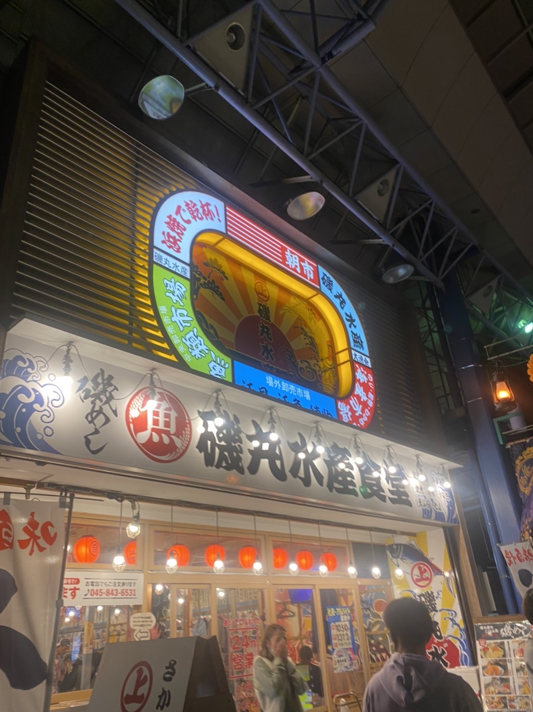
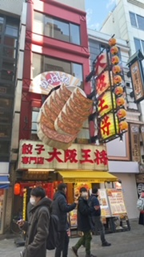

<!DOCTYPE html>
<html lang="jp">
<head>
    <link rel="stylesheet" href="./css/style.css">
    <body style="background-color:lightyellow"></body>
    <html style="background-color:lightyellow"></html> 
    
    <!-- ⑥↓タイトルを変えてみよう -->
    <title>第２回</title>
    <!-- ⑤スタイルシートの設定をしよう -->
    <link rel="stylesheet" href="./css/style.css">
    <!-- h1.htmlからある行をコピペしてくればOK -->

</head>
<body>
    
    <h1>第２回</h1>
    <!-- 塊ごとにdivタグで区切るようにしましょう。 -->
    <center><font size="6"><b><font color="tan">街中の看板</font></b></font></center><br><br>
        <br>

    
         <!-- ①↓に文字を書いてみよう -->
        
<div><center><font size="5"><b>磯丸水産の看板</b></font></center>
<center></center><br>
<p style="text-align:right">22.10.08 自分で撮影</p><br>
<center>居酒屋なので夜に営業していても目立つように明るいライトがたくさん付いている。</center>
<center>また、看板の上にもさらにカラフルな看板がある。</center>
<center>ひと目で海鮮類の料理があるとわかりやすい波の絵や字体になっている。</center><br><br>
</div>


<div>
<center><font size="5"><b>味仙の看板</b></font></center>
<center></center><br>
<p style="text-align:right">22.7.30 自分で撮影</p><br>
<center>黄色の背景に赤の文字でとても目を引く。</center>
<center>店を正面から見た人からも、車で通った横から見た人からも見えるように、</center>
<center>色々な角度や高さの看板がたくさんあって面白いと思った。</center><br><br>
</div>

<div>
<center><font size="5"><b>大阪王将の看板</b></font></center>
<center></center><br>
<p style="text-align:right">21.12.19 自分で撮影</p><br>
<center>文字の看板の上に大きな看板のオブジェがある。インパクトが大きい。</center>
<center>店をわかりやすくするための看板ではなく、これを見るために来店する人も多いだろう。</center>
<center>実際に私もその一人だ。</center>
</div>


</body>
</html>